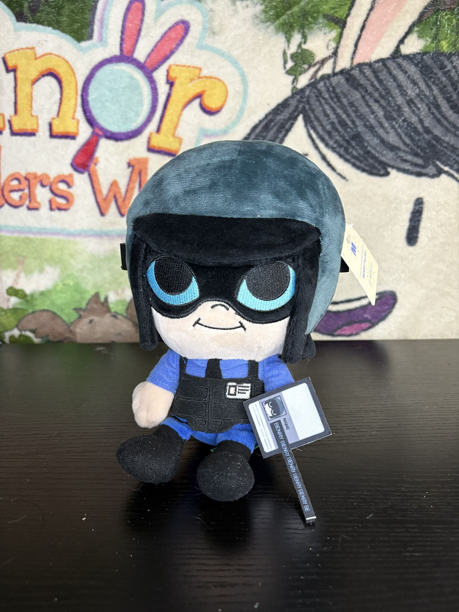
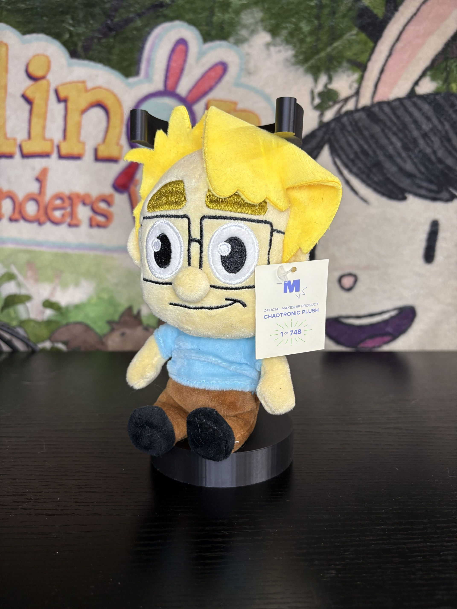

Benry
Release Date: 2021
Company: Makeship
I absolutely adore HLVRAI, it was so peak and like most people led me to watch WayneradioTV which is one of my fav streamers nowadays! And while I dont think HL2VRAI is nearly as good as the original, I've still been loving seeing it! This was a makeship plush that released after the first HLVRAI, quality wise Makeship is usually really good though they do have a very.. ya know uhhh its like funko, they have a style or template they use. I personally prefer something more original but ya know sometimes its all ya got for a something lol. Yeah uhh material is soft, well stuffed, the passport is really good lil gimmick too! All around a great plush!

Bon The Rabbit
Release Date: 2021
Company: Makeship
Another Makeship plush from The Walten Files! I was super super into Walten Files, I still like it i just need to catch up on it lol! I learned about Walten Files from the Nexpo video on it and as a at the time Ex-FNAF Fanboy I fell in love with it, maybe i thought fnaf was too CrInGe for me to like and stopped liking it and saw Walten Files as the Cool version of it. I know realize that was really dumb theyre both their own thing and both very cool and good :D This plush is really good, well made like all makeship plushes. the details on this one is very good though!

Chadtronic
Release Date: 2020
Company: Makeship
I'm.. not really sure why I got this? I like.. I liked his stuff, but it was only just ok haha. I guess i had a okayish job with little expenses so i guess i just said fuck it why not lol. I dont think Chad makes videos anymore, so Idk its a weird one. I feel like this ones proprtions that are a little different than other makeships so... thats cool i guess??

Little Egg Fella
Release Date: 2022
Company: Cool Shirtz